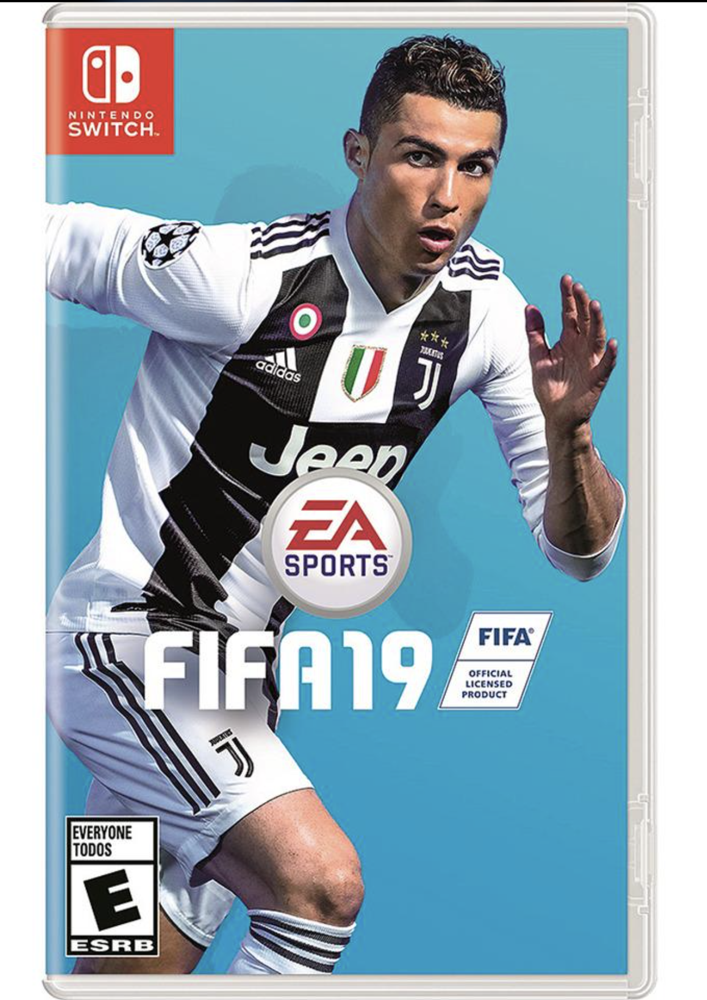
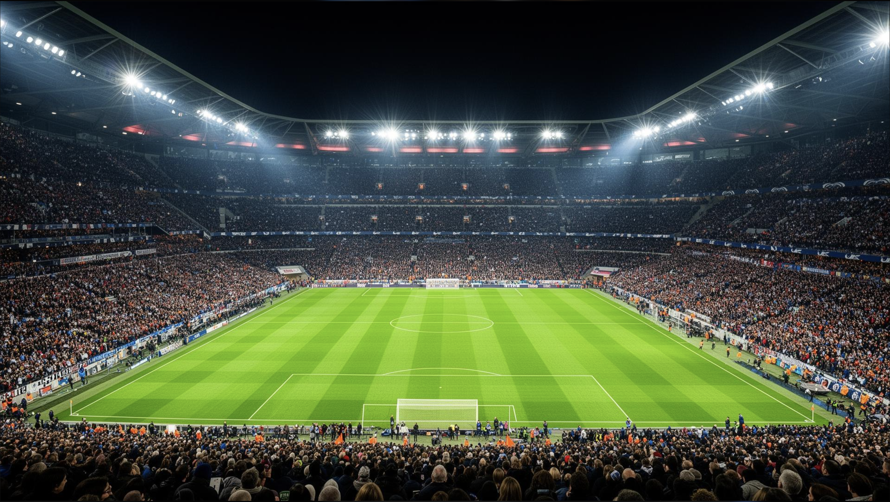
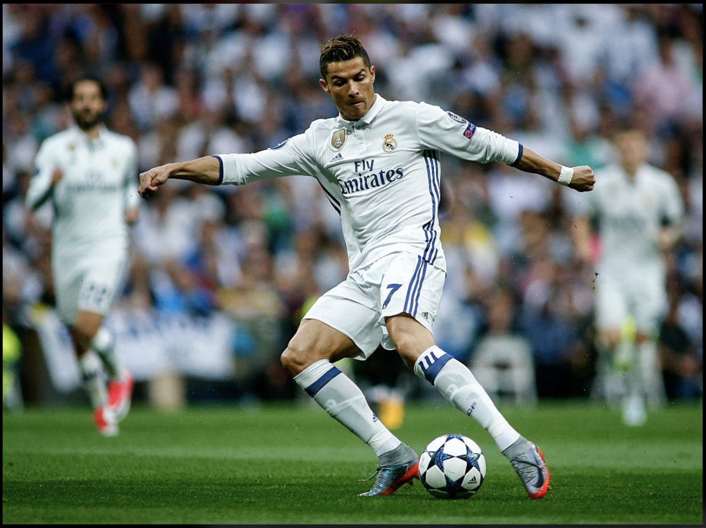

How My Football Journey Began
During the summer holidays of 2020, I was stuck in my hometown when I came across FIFA 19 on my cousin's Nintendo Switch. At first, I started playing it just for fun, without knowing much about football. But as I spent more time playing, I became curious about the game. I started learning about different players, football clubs, the rules of the game, and even how the transfer market worked. Little did I know that a video game I picked up to pass my holidays would eventually introduce me to the world of football.

My cousin's interest in football first caught my attention, but playing FIFA 19 made me curious enough to explore the game myself. I started learning about different players, clubs, and transfers, and gradually developed an interest in football beyond the video game.
Discovering the Game
The more I played FIFA 19, the more interested I became in football. I started recognising players, remembering club names, and checking out how transfers worked. I would spend time exploring different teams and trying to build a good squad in the game. It was fun to learn which players were popular and how changing a player could affect the team. Without even realising it, I was learning more about football every time I played. What started as just a game to pass the time during my holidays had become something I genuinely enjoyed.
What I Learned While Playing FIFA 19
- Learning about different football clubs and their squads.
- Understanding how player transfers work.
- Choosing players and building a strong team.
- Learning the roles of defenders, midfielders, and forwards.
- Discovering how exciting a match can become in its final minutes.

As I learned more about football, I started appreciating the skills of the players, their teamwork, and their determination. I realised that football is not just about scoring goals. It also requires discipline, practice, patience, and the ability to work together. Every match has something new to teach me.
Why Football Became Special to Me
One of my favourite parts of discovering football was becoming a huge fan of Cristiano Ronaldo. His skills and achievements inspired me to learn more about his career and support Manchester United and Real Madrid, the two clubs he played for. I spent time exploring their players, history, and memorable moments. My cousin and I would discuss football and share our opinions, making the experience even more enjoyable.

Important Lessons from Football
- Talent without hard work is nothing. Siuuuuu!
- Every training session brings you closer to your best game.
- Every missed goal is a chance to score the next one.
- Respect your opponents, win or lose.
I also became interested in learning more about the sport beyond the matches I watched. One person I follow for football news and updates is Fabrizio Romano.
A Quick Look at Football
| Position | Main Responsibility |
|---|---|
| Goalkeeper | Protects the goal and stops shots. |
| Defender | Helps prevent the opposition from scoring. |
| Midfielder | Controls the flow of the game. |
| Forward | Creates scoring opportunities and scores goals. |
To learn more about the rules, you can also visit the official Laws of the Game . Understanding these rules makes watching football even more interesting.
Conclusion
Looking back, I am glad that I discovered FIFA 19 during my summer holidays in 2020. What started as a way to pass the time turned into a genuine interest in football. Exploring the game helped me discover new players and clubs, and eventually become a huge Cristiano Ronaldo fan who supports Manchester United and Real Madrid.
This experience taught me that sometimes, a simple moment can lead us to discover a passion that stays with us for years. Even today, football reminds me of how it all began and how a video game sparked my love for the sport.